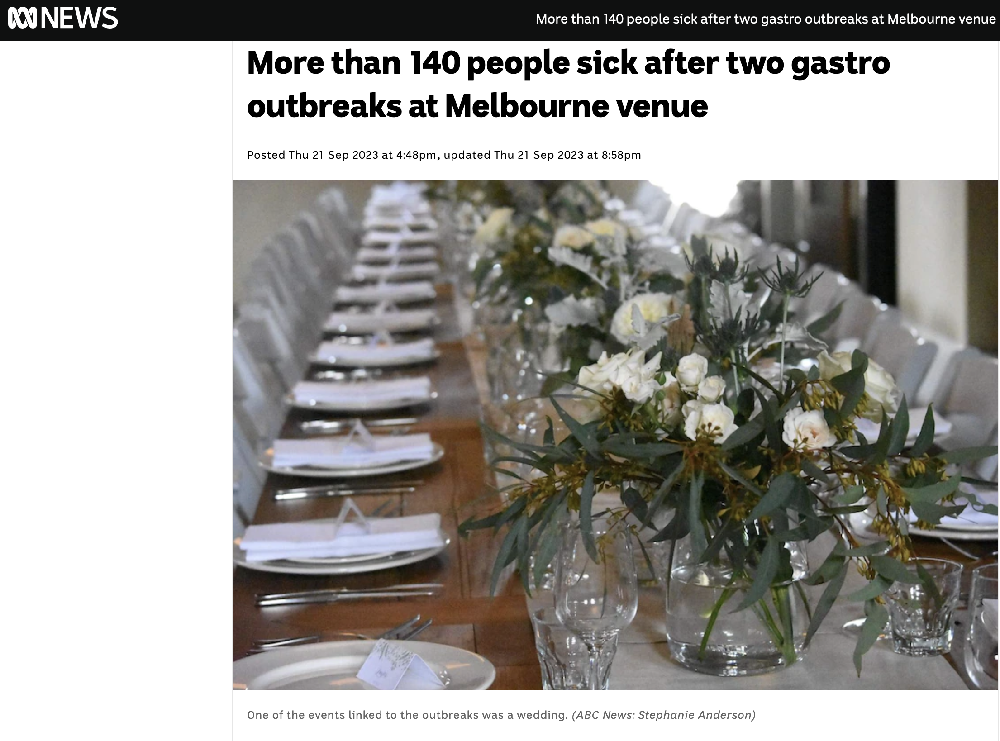
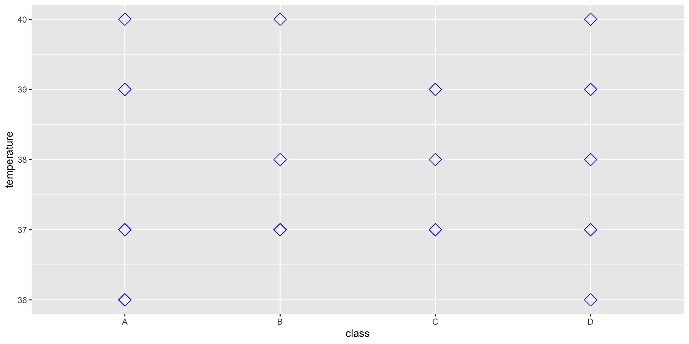

Welcome to Become a Disease Detective ! üîç
Organised by
R Ladies Melbourne
Acknowledgement of Country
We are…
Caitlin, Dionne and Lauren and we are from
R Ladies Melbourne.
We are here to teach you how to code in R!
What is coding and what is R ?
Coding is writing instructions that a machine or computer can understand to perform a task.


R is coding language used in statistics, data science and many other disciplines. It is also very powerful tool for visualising data.
Why should you learn R ?
⚖️ R is free, open source and everyone can access
ü•≥ It can do so many things
üìö Lots of resources to learn and perform tasks, with a very large user community
üßë‚Äçüéì You can get a super cool job ! It‚Äôs a fantastic skill that is highly sought after in the work force.
What will you learn today ?
üó∫Ô∏è What is an infectious disease, what is an outbreak and who are disease detectives?
üîç How can R be used to investigate outbreaks ?
Then YOU! are going to solve an outbreak !
What are infectious diseases ?
ü¶† Infectious diseases are caused by certain microorganisms, such as bacteria, viruses, parasites or fungi, and will make people (or animals) sick when they are exposed to these microorganisms.
üí≠ Most microorganisms don‚Äôt make us sick, but some do, and these are known as pathogens.
ü§ß There are lots of different ways that you might get an infectious disease. Some ways include breathing respiratory droplets, eating contaminated food or water, insect bites and many many more !
When do infectious diseases cause outbreaks ?
üìöThe World Health Organisation definition of an outbreak:
üí° ‚Äúoccurence of disease in excess of normal‚Äù
This might be because of a new pathogen, bringing pathogens to new areas, a mutating pathogen.
Many infectious diseases now have vaccines that mean outbreaks to these pathogens occur much less frequently (for example: measles, chicken pox, influenza etc.)
Let’s go through some examples of infectious disease outbreaks: viruses !
The COVID-19 pandemic of 2019
The COVID-19 pandemic was caused by a virus known as SARS-CoV2. It caused a global pandemic.
A pandemic is defined as an infectious disease affecting multiple parts of the world simultaneously, i.e. multiple countries are experiencing an epidemic
There are now several vaccines that have helped to reduce the severity of this infection
Norovirus Outbreak 2023

Norovirus causes vomitting and diarrhoaea (you might call this gastro)
It is extremely stable in the environment and highly contagious
Ingesting norovirus causes disease
There is no vaccine available for norovirus
What about bacteria!
Buruli ulcer
Buruli ulcer is caused by a bacteria known as Mycobacterium ulcerans
The bacteria is slow growing and flesh eating and is endemic to Melbourne and surrounds
Endemic means that there is an ongoing transmission of a pathogen in that area
Mode of transmission not entirely understood but likely involves mosquitoes and possums
Who studies outbreaks
Public health departments in the government
- How to improve the health of everyone
Academic research at Research Institutes and Universities
- Make new discoveries, such as developing new drugs or vaccines
Doctors and health staff
- Keep their patients safe
And many others too !
An epidemiologist is someone who studies how…
“to keep the public informed on different public health issues and offer solutions to keep communities safe. They perform studies on outbreaks, their causes, transmission and effect on the public, collating that information into accessible data and health recommendations.”
Source: What is epidemiology and what does an epidemiologist do?
What do we need to know about outbreaks
What is the problem ?
What is the cause?
What can we do to make the situation better ?
You are a disease detective for today and you must help us solve a mysterious outbreak !
The situation
Unknown illness causes students to fall ill at local school.
Local authorities are unsure of the cause of this outbreak, but it appears to be linked to a recent excursion to Melbourne CBD
The excursion
A few days earlier, students at a local school went into Melbourne to see an exhibition at the National Gallery of Victoria.
üöå At 8am, they took the bus to the NGV.
üé® They were in the gallery from 9am - 12pm.
üç≤ They had lunch from 12pm - 2pm at three different locations
üßë‚Äçüé® They went back to the gallery for another exhibition between 2 -4 pm
üè° At 4pm they were back on the bus to go home
You are here to investigate…
And you have been given some information including:
Name
Class
Age
Sex
Height
Weight
Was the student feeling sick
What were their symptoms
And we are going to do this in R !
Let’s learn some basics
R can be our calculator
Now you try some basic maths
Type in your numbers either within the workshop.R file or within the console.
Then to run - click Run at the top of the .R script or type ctrl/cmd + enter
The answer prints in the console
What does RStudio look like?

R can be our notebook
We can save important information for later.
We can use <- or =
[1] "My name is Caitlin"
[1] "My name is Caitlin" "My name is Dionne" "My name is Lauren" Your turn !
The same goes for numbers
[1] 16440
Try saving a number or a word to a meaningful name - can you see where it goes?
Now to solve an outbreak !
Where to start?
First we need to load in the data and some tools that are going to help us.
One of the great things about R is that there are lots of pre-installed commands that we can access or ones that others help to create and we can access. These are our packages that we access with the library() command.
What is outbreak_data?
üí°The number one step in data analysis is looking at the data
For this, we are going to use our first pre-installed command called colnames().
[1] "firstname" "class" "height"
[4] "weight" "age" "sex"
[7] "temperature" "sickness" "shortness_of_breath"
[10] "chills" "palpitation" "bloody_stools"
[13] "pain_chest" "abdominal_cramps" "dizziness"
[16] "nausea" "vomiting" "vertigo"
[19] "cough" "fever" "diarrhea"
[22] "constipation" "headache" "pain_abdominal"
[25] "throat_sore" "muscle_pains" ❓Can you find outbreak_data in the environment pane?
üßê What happens if you click on it there?
Different kinds of data
In outbreak_data we have several kinds of information and it’s important to identify what these are !
How would you describe what data we have in
Firstname?How is this different to
Weight?What are some terms we could use to define these ?
Visualising data
The types of data we have to work with will determine how it is best to visualise !
A scatter plot

Notice both the x and the y-axis are things we can count or measure.
A boxplot
Notice the y-axis are things we count or measure but the x-axis are specific groups.
Let’s plot our outbreak_data
We will be using a function called ggplot(). This is a fantastic tool we can use to make amazing graphs !
Like any graph we need to decide:
- What do we want on the x-axis?
- What do we want on the y-axis?
- What kind of graph do we want to make?
üßë‚Äçüé®other ideas like colour, design, groups ‚Ķ we‚Äôll get to this later !
How to ask ggplot to plot outbreak_data
aes is referring to aesthetics, these are all the things we are going to customise.

Next we choose what kind of graph we need
We can use geom_point() or geom_boxplot()
Let’s first try geom_point().
We use the + sign to add it to our first ggplot command
Where would we put geom_boxplot() ?
We can use geom_point() or geom_boxplot()
Now swap height for temperature on the y-axis

Let’s customise !
Can you change size, shape and colour…what kinds of plots can you make ?
Let’s customise !

Can you make a boxplot with class on the x-axis and temperature on the y-axis
A boxplot summarising temperature in the four classes

What does a boxplot tell us ?
- Provides us with an informative summary of the data in our groups
- The center line gives the median
- the box below is 25% of the data below the median and the box below is 25% of the data above
üßê If we don‚Äôt know what R is doing, we can always get help !
How can we use fill to learn more ?
The fill can be specified as aesthetics like the x and y axis.
Can you specify the fill with our Sickness information about each student ?
üßê What does temperature tell us about how the students were feeling?
Time to give our plot a title
Let’s calculate some summaries
This symbol %>% is used to send our data into another command such as summarise()
As the name would suggest, we can generate summaries, such as calculating the median
We can also use group_by() with multiple groups
Just like our boxplot, we want to know the median temperature of the students, grouped by their Class and Sickness status
üëèTry to do this by adding group_by(class, sickness)
How can we relate this to the boxplot we made earlier ?
We can also use group_by() with multiple groups
# A tibble: 8 × 3
# Groups: class [4]
class sickness median
<chr> <chr> <dbl>
1 A no 36.5
2 A yes 39
3 B no 37
4 B yes 39
5 C no 37
6 C yes 39
7 D no 37
8 D yes 39 Let’s focus on the student’s symptoms
We are going to use a new type of graph to do this, it’s called a bar plot.
How many students were and were not sick ?
As well as the bar plot, we can also use the count() command
What is making the students sick ?
Sickness summarises all of the symptoms. Now it’s time to get specific!
Can you make some other bar plots to see what the students were sick with?
üí° Remember we can use colnames(outbreak_data) to find out what information we have in outbreak_data ! . . .
You have five minutes to try and explore making some of your own plots
ü§© You might also like to try customising your plot. Remember we can change the colour by specifying fill = within the geom_bar() command. You might also like to try aes(fill = ).
Shortness of breath
üßê What have you found? What symptoms are the most common ?
Reorganising our symptoms data
Data can be formatted in different ways.
For example, prioritise having one row per individual with lots of columns
This is like our outbreak_data
Or sometimes we can change the format and so instead we have a long list of one observation per row.
This is what we have in our symptoms data.
For the next few plots we are going to use symptoms and not outbreak_data, however they record exactly the same thing
Bringing all the symptoms together
Bringing all the symptoms togther

This doesn’t necessarily help us to decide what is making the students sick because they are not separated as to whether they were sick or not
We really want to separate those that have a YES in
Sickness
We can filter this list to just those that are sick !
This needs the filter() command
Now, what symptoms do the sick students have ?

Interpreting our data

What does this graph tell us?
What are the symptoms of those that are sick?
What might be some causes of illness that give these symptoms?
Likely cause…
Salmonella
What is salmonella?
A bacterial infection
Commonly from contaminated food
Examples…undercooked chicken, raw egg, insufficient cleaning
You can start to feel sick within 6 to 36 hours after eating
But how did the students get sick ?
Challenge: Where did the students get sick?
üé® At the gallery?
üöå On the bus?
üç≤ At lunch?
WAIT ! We have some more information
üç≤ We have just been sent some information about where the student‚Äôs ate lunch !
They ate at three different restaurants !
Plot where the students ate their lunch…
This was based on a real life outbreak in Melbourne !

Today we have learnt…
ü¶† what are pathogens and what are outbreaks
üåé Who are epidemiologists
üî¢ What is R
üìä How to make plots with ggplot
üìà How to organise and arrange complex data
ü§† What‚Äôs something that you‚Äôve learnt today?
Do you want to learn more?
And thank you to…
It Takes a Spark !
and to all of you for helping solve the outbreak !